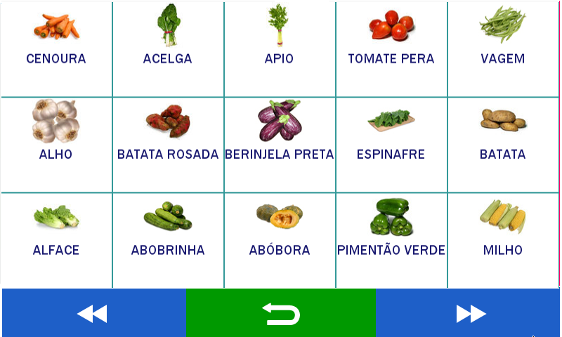

Visores e indicadores de estado
1. Visores

2. Indicadores de estado
A. Modo Venda Direta ao Público


- Referências
- 1. Vendedor em uso. 2. Valor de tara em uso. 3. Páginas de acesso rápido. 4. Indicador de peso ou unidades. 5. Campo para busca. 6. Indicador de zero. 7. Indicador de Tara. 8. Indicador de Peso estável. 9. Função de PRÉ-EMPACOTAMENTO ativada. 10. Barra de estado. 11. Alimentação de rede. 12. Alimentação com baterias. 13. Comunicação de rede (Ethernet). 14. Comunicação de rede (wifi). 15. Data. 16. Hora. 17. Busca de produtos: por número ou descrição. 18. Ticket (venda em curso). 19. Calculadora.
- Referências
- 20. Páginas de acessos rápidos: são visualizados os produtos armazenados e associados (máximo de 15 produtos por página). 21. Teclas de acesso rápido produtos com descrição e com imagem de até 64 x 64 píxels.

- Referências
- 22. Produto: código do produto selecionado. 23. Número do LOTE associado ao produto. 24. Descrição do produto. 25. LISTA de preço associada ao produto. 26. Preço por kg ou unidade para o produto. 27. Indicador de peso ou unidades. 28. Preço total para o produto.
B. Modo Auto Serviço

Equipamento em modo de Auto Serviço. Na tela inicial é possível selecionar entre duas opções de filtro para busca de produtos.

Utilize a modo navegação para acessar dentre as páginas de produtos, ou home para retornar a tela inicial.

Uma vez que o PLU desejado tenha sido selecionado, a tela de venda permitirá duas ações:
- CANCELAR: Cancela a seleção e retorna para a tela inicial
- IMPRIMIR: Efetiva a venda, e efetua a impressão da etiqueta correspondente.